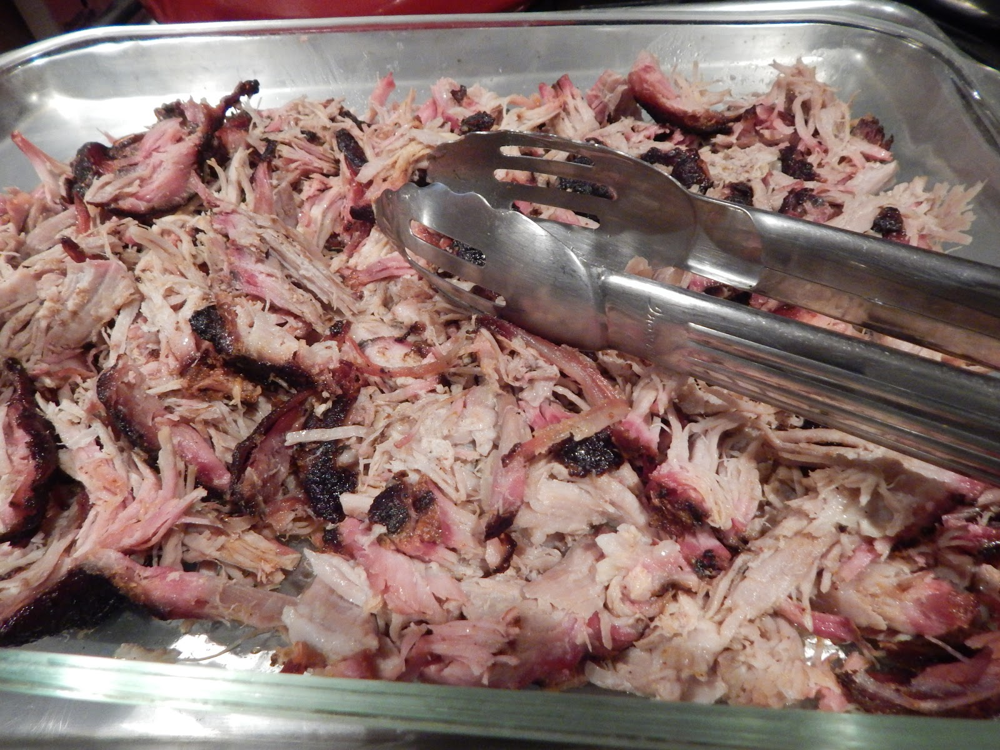

Smoked Boston Butt
Home

Description
Boston Butt is a delicious cut of beef from the shoulder area of the cow. This simple recipes is time consuming at ~10 hours, but delicious all the same.
Ingredients
- Pork Shoulder ~8 lbs
- Dry Rub of Your Choice
- Yellow Mustard
Instructions
- Season pork butt generously with dry rub seasoning
- Place pork in a resealable plastic bag. Spread mustard evenly over butt while inside the bag to avoid mess
- Seal bag and refrigerate over night
- Preheat smoker to 225°F
- Place butt on smoker and smoke for 7-8 hours or until internal temperature reaches 185°F
- Cover with heavy duty aluminum foil and return to smoker. Increase temperature to 275°F. Smoke for an additional 2 hours or until internal temperature reaches 200°F
- Let meat rest inside foil for 30 minutes
- Shred meat and serve